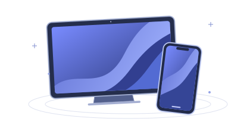

通过 USB 或 Wi-Fi 连接手机，开始投屏与文件传输。

使用数据线连接手机，或从上方添加无线设备。
连接并选择一台手机，即可浏览内部共享存储。
无需数据线。在手机「开发者选项 → 无线调试」中打开「使用配对码配对设备」。
下次怎么连？ 已启用 Wi-Fi 的手机断线后，可在「无线连接」输入手机当前 IP 重连，默认端口为 5555。如果以前只是插过线，仍需先点「启用 Wi-Fi」；手机重启后通常也要重新插线启用。
打开「USB 调试」，用数据线连接并允许调试。在「设备总览」点击「刷新设备」，然后选择「投屏」或「文件」。使用期间保持插线即可。